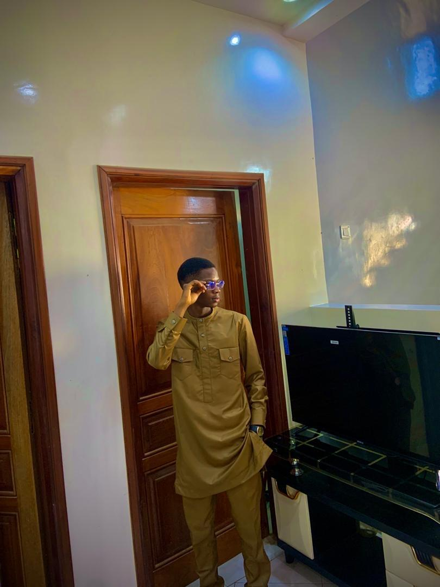

Qui suis-je ?

Je m'appelle Pape Yoro Ndiaye, étudiant en Licence 2 à l'École Supérieure de Technologie et de Management. Depuis mes premiers cours d'informatique, j'ai compris que le développement n'était pas qu'une discipline technique — c'est une façon de créer, de résoudre des problèmes réels, et de laisser une trace durable dans un monde de plus en plus numérique.
Ma curiosité m'a naturellement conduit vers plusieurs domaines : le développement web avec HTML et CSS, la programmation avec Python, la conception de bases de données relationnelles, et les systèmes embarqués avec l'ESP32. Cette polyvalence me permet de comprendre les projets dans leur globalité.
Aujourd'hui, je cherche à consolider mes bases, à travailler sur des projets de plus en plus ambitieux, et à construire un profil qui reflète à la fois ma rigueur technique et ma créativité.
Parcours